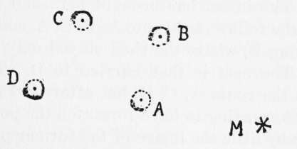

Manifestations Of Individual Memory
Description
This section is from the book "The Psychic Life Of Insects", by E. L. Bouvier. Also available from Amazon: The Psychic Life of Insects.
Manifestations Of Individual Memory
Fabre tells us the story of the Languedoc sphex (Sphex occitano) a kind of wasp that hunts the grasshoppers of the genus Ephippigera for its progeny, stings them under the thorax and paralyzes them, and carries them to a prepared place where each victim is buried with an egg laid on. its side. Usually the sphex places the grasshopper a short distance from the point where it is going to dig its nest, but it often meets obstacles on the journey. A wasp dragging its heavy burden arrived at the foot of a wall freshly plastered, where it could not find a favorable place for digging. Fabre saw it abandon its victim, fly to the top of the wall, where it sought, under the tiles, a gravelly place, then, having made its choice, returned to its victim,, which it wished to hoist up. Twice the grasshopper fell to the ground and twice the wasp repeated the attempt. The third trial was crowned with success. In this unusual case the insect was helped by memory ; it remembered the place where it had left its prey and after ten minutes passed in its investigations it readily went back to it. Moreover, the exercise of the memory is a necessity for a species which captures its prey before digging a burrow. While it is working at its digging the insect "does not fail from time to time to give a distant glance at the Ephippigera left on the route." A great beetle, the sacred scarab (Ateuchus sacer) does the same thing in making the underground burrow where it will store its ball of dung which is to serve it as food. It leaves the burrow, in course of excavation, says Fabre, to go fondle its dear ball and roll it a little nearer.
In the case of Sphex as in the case of the scarab, the obstacles are small and the distance is not great. I borrow from Turner (1912) an example where the difficulties were greater. It was again with a predatory wasp, not a sphex as Turner said, but a spider-hunting Sphegid. The insect captured its prey in a yard in front of a school and tried to carry it into the cellar of a house just opposite. But the burden was too heavy to be carried in flight and there was a barrier of planks midway between the school and the neighboring house. The insect came to the barrier and tried to climb over backward. A scantling was in the way. It descended, dropped its spider, flew to the door of the cellar, then returned and took its victim again and carried it to the end of the barrier at a spot where a row of stakes began. Again a dropping of the prey and again a flight to the cellar, a flight at a direction of forty-five degrees from the former. On its return its prey was dragged quite to the door ; there the wasp left for a momentary exploration. New attempts by the wasp and new climbings which encountered a scantling; three times the wasp tried to surmount this obstacle and the third time she descended to lay her burden on the ground. A last attempt was finally successful, the insect entering the cellar through a hole left by a knot. "The action of this wasp and the movements that characterized it," observes Turner, "cannot be explained by tropisms . . . and it seems neither to be the result of what Thorndike calls movements of trial and error. All the behavior of the animal is that of a creature struggling against obstacles to reach a certain known spot in a known place"; and who does not see that in this struggle the insect is aided by memory Ì
The mechanism of individual memory with insects is the subject of fine and very suggestive researches made by Ferton on the solitary bees of the genus Osmia. The bees of this genus nest in more or less tubular cavities, where they prepare their cells of triturable materials. Each cell receives a paté of honey and pollen and an egg from which comes a young larva that is to consume this nourishment, after which the cavity is closed with a mortar like that forming the cells.
Let us study with the author (1905) the behavior of two species, Osmia rufohirta and 0. ferruginea, which make their nests in the empty shells of land snails. The first has the habit of rolling the chosen shell to a favorite spot and, after closing it, putting it in a hiding-place. The second, less particular, leaves the shell where she finds it.
An Osmia rufohirta (Figure 4) closes its shell, situated at A, by means of a mastic made of leaves gathered at M. She pushes the shell to B and then returns to M to make the mastic. After ten minutes she returns, describes a course toward A, then goes to B. She continues this for a quarter of an hour, but, during her absence the shell is removed to C. On her return the bee flies to A, then to B, and, finding nothing at either spot, begins to hunt around, which finally brings her to the shell, where she deposits her mastic. Before going away again she takes several reconnaissance flights (just as Turner's Sphegid did in a new situation) and at the moment of return she follows the route A, B, C. An absence of a half-hour. The insect has brought her shell back to A, but she follows the route A, B, C, A, sometimes neglecting B, where the shell stayed only a short time. The nest is then carried to D. The bee follows the route A, C, D, but afterward goes by C, D, "appearing to have forgotten the point A." "Little by little the image of the former places of her nest are effaced in the memory of the insect. ' ' In. fact, the bee obeys impulses of mnemonic origin.
Fig. 4.-Movements of the shell of an Osmia rufohirta which is hunting at M-The distance A to B is 12 cm. (After Ferton).
Osmia ferruginea is less skilful in her manceu-vers, perhaps because she is not accustomed to place her nest. When one carries the latter fifty centimeters away, it takes her a long time to find it, and, although she takes reconnaissance flights before leaving it, it is not without difficulty that she directs herself in the course of her first jour-neyings. But, little by little, the impressions become stamped on her memory, and when the shell has been moved several times one sees the wasp fly to the different points where she has been, after the manner of Osmia rufohirta. Like the latter, 0. ferruginea very quickly neglects the spots where the shell has rested for only a short time.
From these experiments we may deduce with the author "that memory of places plays a great role in the return ... of the Osmias," that it is quick, tenacious, that its tenacity increases with the multiplicity and the duration of the impressions, and, finally, that it diminishes very quickly to the point of disappearing when the impressions are rare and brief. Here we are very far from tropisms, from differential sensitiveness,-indeed, even from species memory. Thanks to the impressions they receive and so easily keep, the sphex and the dung-beetle of Fabre, the Sphegid of Turner, and the Osmias of Ferton know how to manage things and to meet the most unexpected situations. They do not act as automata; the memory that guides them in these circumstances seems, indeed, from its essential characteristics, to belong to the same degree of psychism as the human memory.
Continue to: